リハビリテーション
痛みの原因を理解し、動作から改善するリハビリを
当院では、「痛みを取るだけで終わらないリハビリ」を大切にしています。
痛みは、姿勢・筋力・生活動作のクセなど、日常のさまざまな要因が積み重なって生じます。
そのため、当院ではまず原因を丁寧に見極め、「動作そのものを整える」ことで再発しにくい身体づくりを目指します。
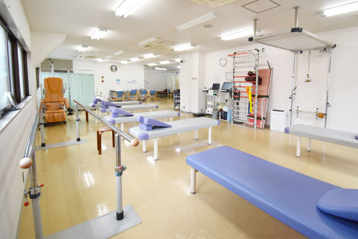
当院のリハビリの特徴
動作分析に基づく、根本改善型のリハビリ
痛みのある部位だけを見るのではなく、「どの動作で負担がかかっているのか」を丁寧に分析します。
- 立ち上がり、起き上がり
- 歩行
- 階段の昇り降り
- 家事動作
- デスクワーク姿勢
- 運動時の動作確認
こうした日常動作を細かく観察し、痛みの原因となる動きのクセを見つけて改善していきます。
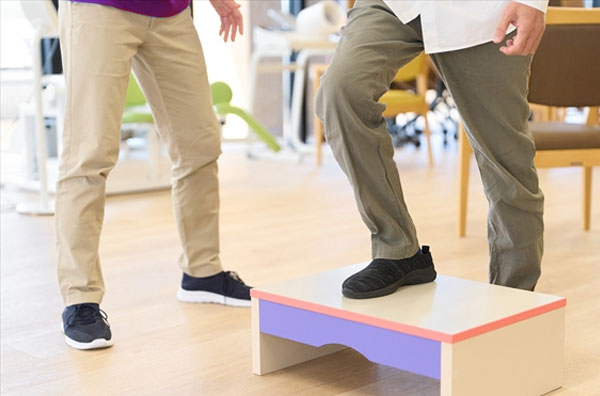
個別運動療法
患者様一人ひとりの症状・生活スタイルに合わせて、完全オーダーメイドの運動療法をマンツーマンで行います。
- 関節可動域の改善
- 筋力トレーニング
- 体幹・バランス訓練
- 姿勢改善
- 歩行トレーニング
- 痛みが出る動作に対しての正しい使い方の指導
「どの筋肉を、どのように使うと痛みが減るのか」を丁寧に説明しながら進めます。
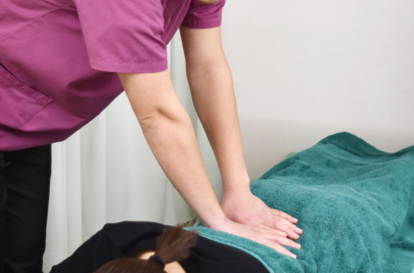
姿勢・歩行の改善
姿勢や歩き方のクセは、肩こり・腰痛・膝痛など多くの痛みの原因になります。
当院では、「正しく立つ・歩く」ための身体の使い方を分かりやすく指導します。
- 猫背・反り腰の改善
- 骨盤の傾きの調整
- 足の着き方・歩幅の改善
- 体幹の安定性向上
- フォームなどの指導
日常生活で無理なく続けられる方法をお伝えします。
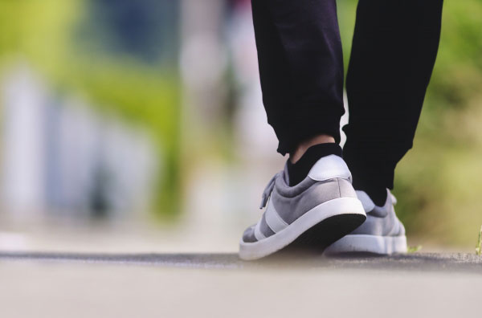
物理療法（痛みの軽減・炎症の改善）
必要に応じて、物理療法を組み合わせて痛みを和らげます。
- 温熱療法
- 電気治療
- 超音波治療
- 牽引療法
痛みが強い時期は無理をせず、「痛みを抑える → 動作を整える」という流れで進めます。
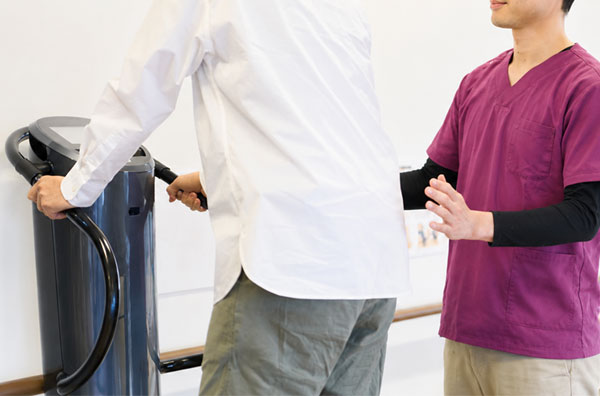
自宅でできるセルフケア指導
リハビリの効果を長く保つために、ご自宅でできる簡単なストレッチやエクササイズをお伝えします。
- 1日5分でできるストレッチ
- 姿勢を整えるコツ
- 生活動作で気をつけるポイント
- 再発予防のための習慣づくり
「続けられること」を最優先に、無理のない内容をご提案します。
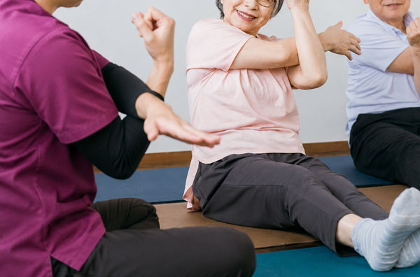
再発予防プログラム
痛みが改善した後も、再発しにくい身体づくりをサポートします。
- 筋力の維持
- 正しい動作の定着
- 姿勢の安定
- 生活習慣の見直し
痛みを繰り返さないための「治った後のケア」まで見据えたリハビリです。
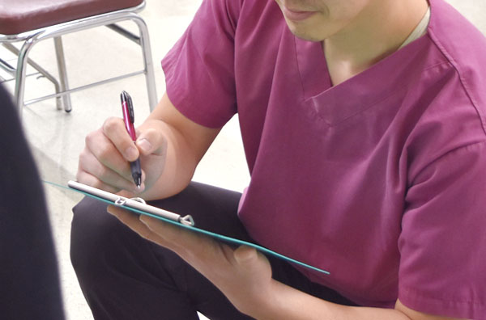
対象となる症状
「どこに行っても良くならなかった」「痛みを繰り返してしまう」「日常動作がつらい」
そんなお悩みを抱える方にこそ、当院のリハビリを受けていただきたいと考えています。
痛みの原因を丁寧に見極め、あなたの生活に寄り添ったリハビリで、「動ける毎日」を取り戻すお手伝いをいたします。
 首の痛み
首の痛み 肩こり、肩の痛み
肩こり、肩の痛み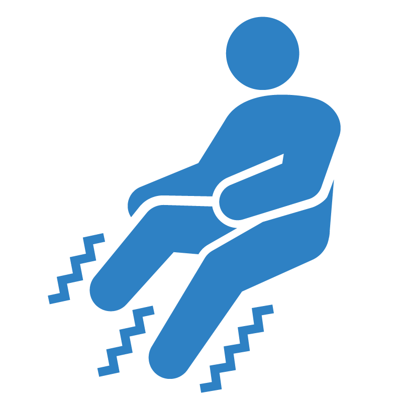
手足の痛み、しびれ 腰痛、ぎっくり腰
腰痛、ぎっくり腰 股関節の痛み
股関節の痛み 膝の痛み
膝の痛み 慢性的な痛み
慢性的な痛み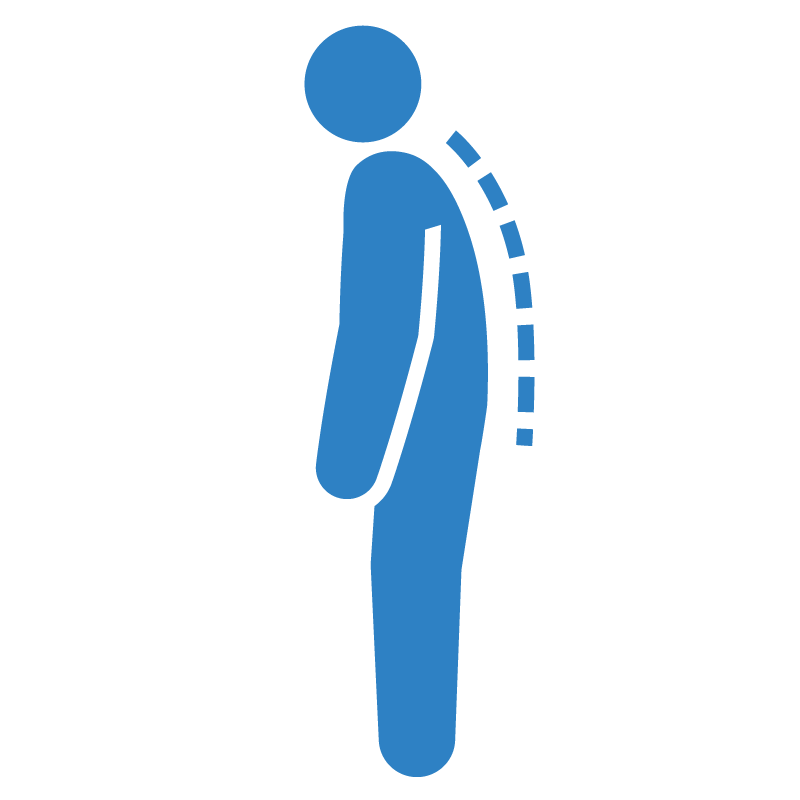
姿勢の崩れ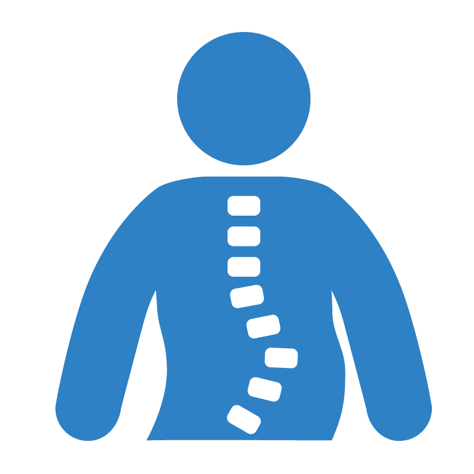
側弯症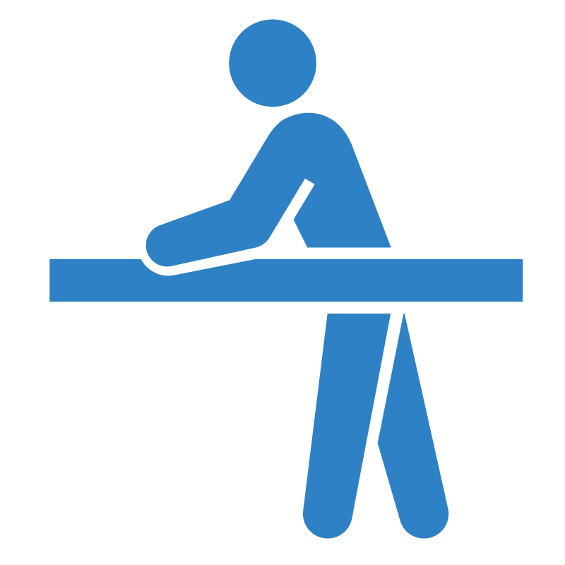
歩行の不安定さ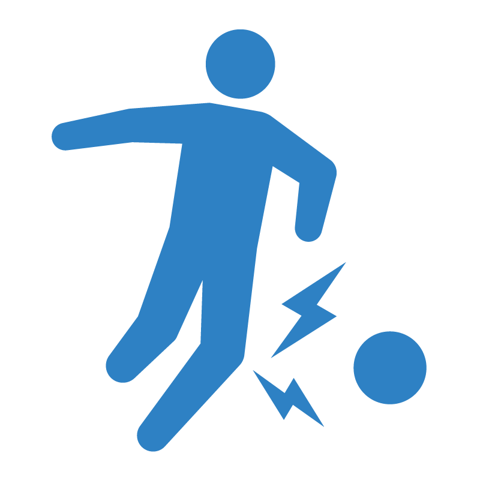
スポーツによる痛み リウマチによる関節の不調
リウマチによる関節の不調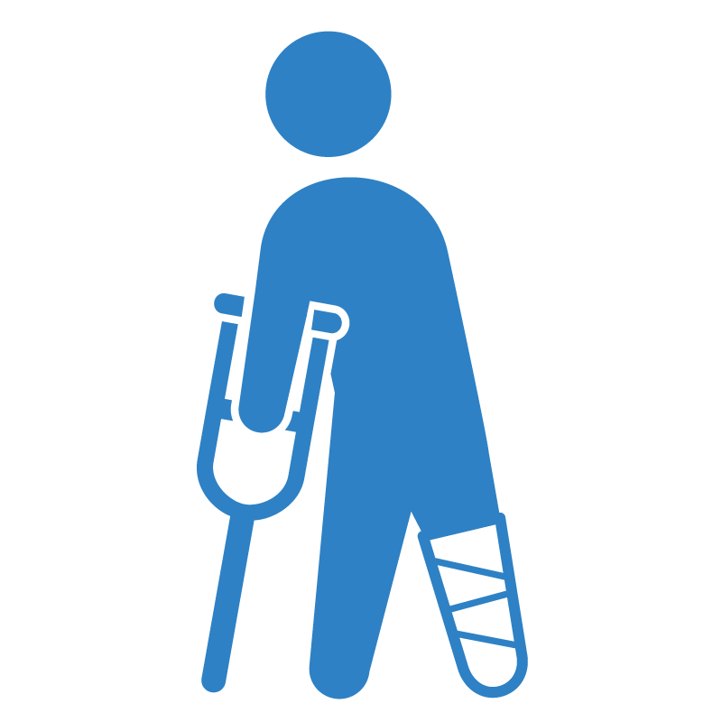
手術後の不調やリハビリ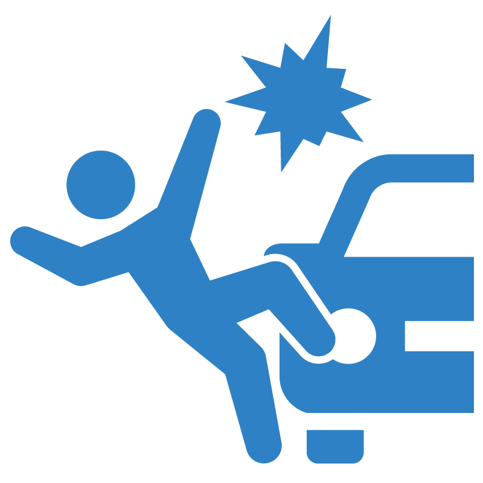
交通事故による症状
当院では、国家資格を持った理学療法士と柔道整復師が常勤で在籍し、地域の皆さまの健康をサポートしています。
他の病院で行った手術後のリハビリも受け入れていますので、お気軽にご相談ください。
リハビリ機器のご紹介
腰椎牽引治療器
腰椎に引く力を加えることにより、筋のストレッチを行います。また脊髄での神経の圧迫を和らげることで痛みやしびれを緩和させる治療法です。
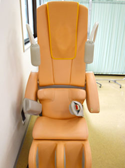
ウォーターベッド
ウォーターベッドは水圧による優しいマッサージで、血液循環の向上、腰痛や筋肉痛の緩和などに効果があります。癒しの効果もあります。
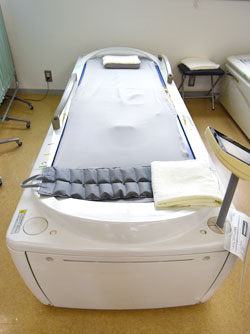
超音波骨折治療器
超音波骨折治療法は、プローブを患部に固定した状態で出力の弱い超音波を断続的に発振することで、骨折部位に音圧刺激を与え、骨の癒合を促進します。
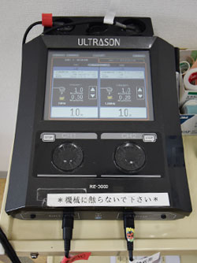
ソニックタイザー
超音波の機械的振動によって生体組織が加温され、細胞膜を適度に刺激して細胞を活性化させます。周波数を変えることで、大きな筋肉の損傷から表層部の治療まで可能です。
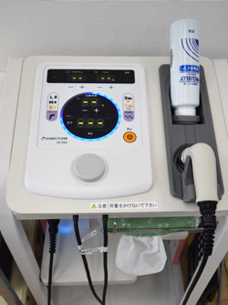
低周波治療器
低周波治療法は、体に電流を流すことで筋肉を動かし、痛みの緩和や疲労回復、血行の促進などを図ります。
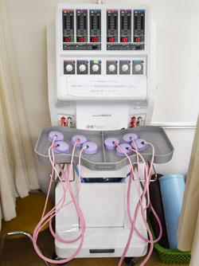
干渉波治療器
異なる周波数の電流を体内で交差（干渉）させ、体の深部に低周波の刺激を発生させて痛みやコリを和らげます。
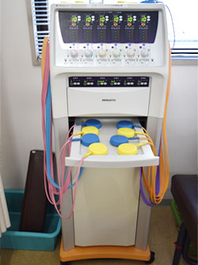
ホットパック
体を温めて治療する温熱療法です。患部を温めることによって筋肉は和らぎ、血行を促進させ、痛みの緩和が期待できます。
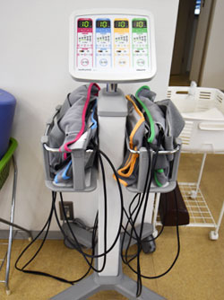
ラクシア
脚は心臓から遠く下の方にあるため、血液の渋滞が起こりやすい部位です。ラクシアは空気圧により静脈を圧縮し、歩行運動に代わって血液の循環を促進します。
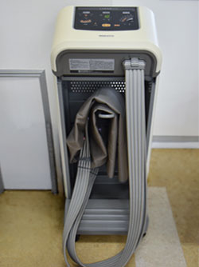
体組成計
体脂肪や筋肉量、骨量など体の組成を計測することができる機械です。定期的な測定で、健康管理はもちろん、リハビリによる身体の変化も視覚的に分かりやすく把握することが可能です。
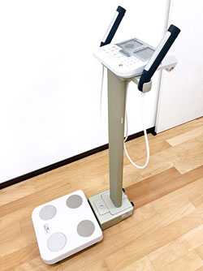